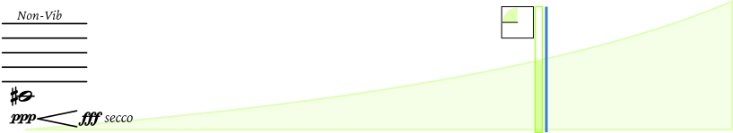
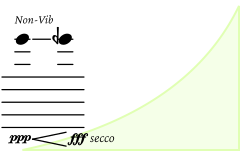
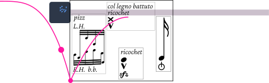
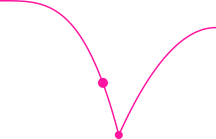
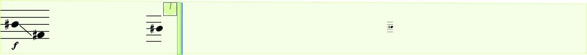
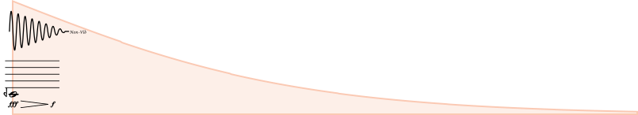
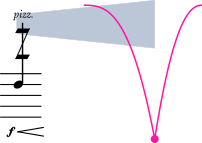
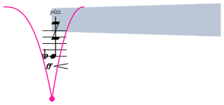

String Quartet No. 1 — Justin Yang

Play the crescendo from dynamic 1 to dynamic 2. The bottom of the curve corresponds to the starting dynamic, the top to the ending dynamic. The contour of the curve determines how the crescendo grows over time.
A curve follower gives your real-time position in the curve. An animated dial counts down for the duration of the curve.

Curve-Based Crescendos with Glissandos
The curve describes the crescendo. The glissando should be made over the duration of the curve. You can choose to glissando with the curve (or inverse), or you can do a linear glissando over the duration of the curve.

Motive Cell
Play any of these motives during the designated duration. All are open pitch. The pizzicato motive is a two-handed pizzicato played like a grace-note figure in "one attack." You can finger pitches or a double stop with your left hand, and with the remaining fingers, pluck. The right hand will pluck behind the bridge. The rest of the notation is self-explanatory.
Line Wedge
Play for the duration of the line. The thickness of the line represents density. The thickest line (maximum density) takes up about the top third of the track.
Ensemble Texture Indicator
This indicates a "flocking" ensemble texture. Play immediately after another player, or you can try to anticipate and play immediately before another player. This leads to a clustering of motives throughout the ensemble. The line wedge refers to the density of articulations, so the first line shown here is relatively sparse.

Gravitational Conductors (bouncing ball)
If these appear, play one of the motives as conducted using the ictus suggested by the animation.
A rapid, fluttering sound with continuously changing harmonics.
Left hand: Move continuously on the fingerboard in the range indicated by the notated pitches. Try to find the highest harmonics you can sustain. Hold briefly, then continue the search.
Right hand: Use a combination of jeté, bow pressure, and bow speed to create and sustain as rapid a flutter as possible.
Use the same left-hand technique as above and play an unmeasured tremolo.
The curve determines the rate and shape of acceleration or deceleration over time.
Left hand moves chaotically across the fingerboard and all strings. Use as many fingers from both hands to pluck a dense mass of pizzicato, like a hailstorm.
In this section, the ensemble plays a variety of glissandos and long tones to generate acoustic beating.

The viola plays the anchor tone, which is a long, slow glissando. The scroll bar has a pitch tracking system that will display the approximate pitch you are at with quarter-tone resolution. Small, static pitches can be found throughout the curve which indicate when you've reached that pitch.
In this section, the curve describes the glissando. The curve defines the rate and shape of pitch change over time.
Adjust the dynamics throughout this section so that the acoustic beating effect is as rich as possible.

The curve describes vibrato speed.
Play the fragment as written at your own tempo. The gravitational conductor indicates when to begin the fragment. If you have not finished playing the entire fragment by the time another event comes, abandon the fragment and play the next event on time.


The gray line wedge indicates intensity and speed of the tremolo. The gravitational conductor indicates a begin attack or an end attack.
If the notation and line wedge is before the gravitational conductor, begin the tremolo at the beginning of the line wedge and end abruptly at the impact of the gravitational conductor in a manner suggested by the gravitational conductor ball impact.
If the gravitational conductor is at the beginning, begin the tremolo in a manner suggested by the gravitational conductor.
The left hand technique: finger the third or fourth string and use the fleshy part of the index finger to mute the higher strings, then strum with one of your remaining fingers. The right hand will play one or several of the strings behind the bridge. Play both hands simultaneously in an irregular cluster. The cluster duration and shape can vary throughout the motive.
The line wedge indicates density of articulation, but the motive should remain quiet throughout the section.
Document in progress.